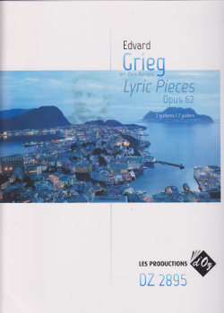

Solo Guitar
Ten Popular Songs
Volume 1
Ten Popular Songs
Volume 2
 Various: Three Pieces in Folk Style
Various: Three Pieces in Folk Style
Two Guitars
Debussy: Danse: Tarantelle Styrienne
Debussy: Suite Bergamasque
Debussy: Suite: Children's Corner
Debussy: Valse: La Plus Que Lente
Faure: Barcarolle Op. 26 No. 1
Faure: Eight Pieces Breves Op. 84
Faure: Dolly Op. 56
Faure: Impromptu Op. 34 No. 3
Faure: Three Romances without Words Op. 17
Grieg: Album Leaves Op. 28
Grieg: The Cowkeeper's Song
(from 'The Woodentops')
Grieg: Lyric Pieces Op. 12
Grieg: Lyric Pieces Op. 38
Grieg: Lyric Pieces Op. 43
Grieg: Lyric Pieces Op. 47
Grieg: Lyric Pieces Op. 54
Grieg: Lyric Pieces Op. 57

Grieg: Lyric Pieces Op. 62
Grieg: Lyric Pieces Op. 65
Grieg: Lyric Pieces Op. 68
Grieg: Lyric Pieces Op. 71
Grieg: Poetic Tone Pictures
Op. 3
Ravel: Mother Goose Suite
Three Guitars
Ravel: Le Tombeau de Couperin
Ravel: Valses Nobles et Sentimental